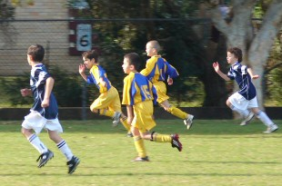
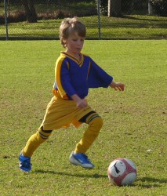
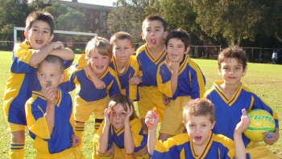
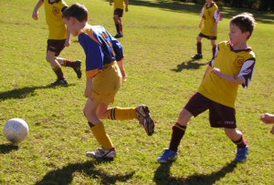
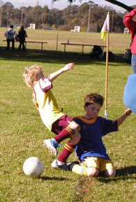
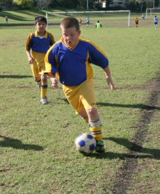
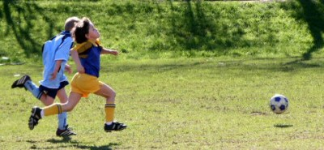

| Match Report - 28 June 2008 |
|
|
|
|
|
|
|
| U6 - White A |
North Ryde White Knights - Macquarie Combined Sports

|
|
|
|
A great game for the White Knights in a very even contest against a
formidable opposition. Our team worked tirelessly and concentrated hard
on listening to the coach who was keen to promote more teamwork in tackles
and support play whilst attacking.
Player of the week Riley had a fantastic all-round game and will develop
into a fine attacking midfielder, whilst Darcy looked dangerous on many
occasion in attack and continues to be strong up the middle of the park.
Hayden is great reader of the game and found himself making good tackles
and running with the ball in open space. Jasmine played a beautiful defensive
role at the back by giving the ball an almighty whack when clearing and taking
the pressure of the back-line.
Henry displayed excellent team work by staying level with the ball and looking
for the pass across the front of goal for opportunities to shoot as requested
by the Coach. William Hanley showed he is a dangerous wing man with his speed
and was always looking for opportunities from the kick ins. William Briese
also performed solidly and is an another who has an enormous kick and chased
back strongly.
The team skill level is improving greatly but more importantly so is the team
work making me a very proud Coach. Keep up the good work.
- Wayne Fowler
|
|
|
|
|
|
Muddy Magdala was the venue for this Round 12 clash, in fact it was the same
ground that our Koalas had scored an emphatic win only two weeks earlier.
Would the week's lay-off have a negative effect on our team or would it
just make them hungrier for more success?
With a full squad on hand for the first time in many weeks, the sun shining,
Lisa performing her manager role (also for the 1st time in many weeks!) our
team were ready to play... and play they did!
From the kick-off, our trademark short passing game went into full swing with
everyone looking to give the ball to someone in a better position (sometimes
even an opposing player). It wasn't long before Jarvis found the back of the
net to get us going with a well-hit shot from quite some distance. In a
twinkling of an eye it was 2-0 and it seemed it was only a matter of by how
many. Jarvis, Charlie and Jaiden were combining beautifully in the mid field
with some slick passing and pullbacks that even had themselves confused at
times.
Jack and Lioda were playing out a bit wider, allowing us to play an expansive
game and making use of their speed setting up numerous scoring opportunities.
Jack in particular was terrific and really wanted to get involved in the
play. Credit must go to Holy Cross who never gave up and started to come back
into the game with a couple of goals of their own. It could have been even
worse for us had it have not been the defensive skills of 'the rock' Daniel
who was able to stop a number of attacking Holy Cross raids.
Our player of the match this week was James who turned in a blinder. James
was all over the park setting up goals and getting back to help out his
teammates in defence as well. His form over the past few games has steadily
improved and he was certainly a worthy recipient of this award. The look on
his face when he was announced... priceless.
With three games to go, the Green Koalas have improved out of sight and all
the hard work done by Gary and the rest of the coaching team is really
starting to show. Welcome back to our team manager Lisa, who has been
seconded to netball for the past few weeks but should (I should say will)
be back with us for the remainder of the season.
- Paul Bonaventura
|
|
|
|
|
|

The grounds at Meadowbank No 6 took a pounding on Saturday morning at 9:30am
as the North Ryde Blues battled it out against West Ryde Rovers in a contest
that saw both teams deliver exceptional work rates as they criss-crossed
just about every inch that the field had to offer.
The pace was frantic and full marks to both teams for their levels of
fitness and the closely-match spectacle they produced for the galleries
on the sideline.
For their part, the Blues seem to have lost the bogey that had dogged them
for the first half of the season, ie. conceding two goals within the first
few minutes of the match, effectively sealing a minor chink in their armour
to make them a rather formiddable opponent to deal with.

Christopher and Patrick
shared the goal-keeping duties for the day and both made some exceptional
saves that kept the West Ryde Rover's scoreline in check, matched only by
equally as impressive goal and clearance kicks.
Tom H, the essence of composure, is poetry in
motion when it comes to halting an express train in it's tracks. He has
a knack for reading the run and bounce of an oncoming ball with mathematical
precision and has startled many a striker by calmly relieving them of the ball,
working it past one or two players with relative ease, and sending the ball
back into the danger zone. Magic.

Tom O, while still relatively new to the game of
football, makes a very good job of maintaining his position in the field
and can be a menace to the opposition when they try and make a run for the
goals.
Man of the match Jack is always a force to be
reckoned with. He combines fearless midfield charges with skillful dribbling
to make it very difficult for the opposition to slow him down. And when
Eli comes screaming down the track in a bundle of
flowing locks its enough to strike fear into the heart of anyone who attempts
to get in his way.

Adam had a cracker of a game, at one stage running
a full half of the field to intercept and thwart what seemed like a certain
goal when a Rover's attacker found themselves with all the free space in the
world. And who on the sideline doesn't sense a goal in the making when Adam
comes within sniffing distance of his long-range kicking ability? Scary.
Our two resident speedsters Shannon and
David combine fitness and enthusiasm to find themselves
spread over every corner of the field, as eager to end an attacking movement by
the Rovers as they were to have a pot at goals themselves.
Last, and by no means least, is young Charlie who
has an uncanny knack for being in the right place at the right time. Charlie
had a great performance on the field and was responsible for the sensational
volley off Adam's corner-kick that powered through the Rover's goalposts and
essentially earned the Blues the win.
This was one of the Blues' toughest matches to date, and the scoreline
was a relatively fair reflection of a game that saw both sides have several
opportunities at goal that either just missed or were well saved by the keepers.
Charlie's goal came midway in the second half and gave the Blues the edge they
needed to carry them through to the final whistle. The general fitness of the
team is phenomenal, and with just the one substitution to play with, they deliver
a non-stop work rate that would do a marathon runner proud.
Each player appears to be finding their niche on the field, and their ability to
read the game as a whole is improving with each passing game. Combine this with
their individual skills and an unbridled desire to win each game they play and
you certainly do have a force to be reckoned with.
- Mark Howard
|
|
|
|
|
|

With a blue sky and the sun shining it was a perfect day for a game of
soccer... and what a game it was!
Holy Cross started strongly but our defensive pairing of
Thomas and Matthew
performed really well.

Thomas time and again made crunching tackles and
Matthew showed off his excellent heading and also
managed a goal line clearance just when it looked like Holy Cross were about
to score.
When the ball finally got past the defender, Sam
was at hand to race out and clear the ball making some great saves. Towards
the middle of the first half North Ryde started pressing more with
Hamish, Oscar and
Rhea making great runs from midfield.
Kyran also got stuck in and showed off a deft new
turn that he had been practicing.
But just when we thought the game was going our way, Holy Cross broke and
scored just before half time.
In the second half there were more big tackles with
Pete, Mitchell and
Oscar making their presence known.
Ryan moved into the goalie position and
Sam came out to continue his good game with more
strong defending and was the deserved player of the week.
Quick breaks from Holy Cross resulted in two quick goals but at 3-0 the
best was yet to come...
Rhea picked the ball up from 50 yards out,
dribbled past 3 players and then scored in the bottom corner!
At the end of the game the only thing that really separated the teams was
Holy Cross's ability to create space and pass the ball to free players -
if North Ryde can improve on this then the leaders had better watch out!
- David Hayward (Kyran's Dad)
|
|
|
|
|
|

Hands up any of you who have played on the expansive pasture called Carlingford
No 1. Keep your hand up if when you did, you had not yet turned 8.
The super under 8 Oranges found the going very tough on this huge piece of
muddy turf - but they put that aside and worked tirelessly for 40 minutes
to create history - their first ever scoreless draw!

Regular readers to this column will know that the mighty Oranges have only
had one win this season, so a draw is indeed very good for the spirits and
an encouragement to all. Supporters and strangers alike were heard to
exclaim that this team of try-hards have 'clicked'. We all witnessed well
timed pull-backs, thoughtful passes, ferocious tackling, energetic running
- and lots of it.
In truth, their goalie didn't really have much to do and the bustling
Roselea forwards went on raid after raid.
Our goalies Julian and
Harrison had their work cut out for them,
especially Harrison who was diving and
scrambling more than any Italian fullback that you may have seen recently.
Encouragement award winner Tom was inspiring.
He ran everywhere, including one run that saw him dribbling the ball almost
the length of the field.
Full marks go to Josh and
Timmy for some great tackling and some excellent
listening to the coaching staff.
Josh was on show today with a large entourage of
supporters and admirers complete with streamers and banners.
The feature of the morning was Ben's legs pumping
all over the place, regularly sprinting back to prevent the sharp shooters
from Roselea from scoring and earning himself this week's player of the
match award.
Well done guys and gals, you did us proud - a draw like this under these
conditions shows that a win is just around the corner.
- Andrew Curdie (Coach)
|
|
|
|
|
|
Our defence played well despite the score. Putney were lucky to seize two of
the goals off NRS lapses in concentration. Emile was on fire, he was relentless
in his attack on PUT's strikers to keep them at bay. It was encouraging to see
several of our boys concentrating their efforts to put pressure on the most
dominant of the PUT players, including strong tackling and possession of the ball.
The half time score was 1-0 to PUT. NRS made several attempts at getting the
ball near PUT goal. Unfortunately, their defence was too strong and cleared
the ball down towards NRS goal on numerous occasions. However, NRS managed
to break free and Aymon kicked the ball to Ryan who was able to secure the
ball in the net. Thanks once again to Christian (GK) and Koray (Defender) for
their great contribution in helping us out. Player of the match was awarded
to Josh for playing a great game and following through on instructions given
by the coach.
- Lesley Campbell (Manager)
|
|
|
|
|
|
A sunny, 'fresh', dewy morning greeted the boys at Morrison Bay at 7.45am
for an 8.15am kick off against Saints United.
Once the whistle blew, North Ryde took possession of play straight away with
Cameron catching our opponents off guard (and the reporter!) and scoring our
first goal within 5 mins! As play continued we saw some solid defence work
on the right with Nathan and Zac delivering lovely balls down the wing to
Luke, who had a few unlucky shots at goal. Equally strong in defence on the
left, was Chris, who cleared the ball well - and James kicking some lovely
through balls up the wing where Ben and Elia played their parts, almost
scoring at one point. Accurate corners from NR gave the boys further shots
at goal with Arman scoring and taking us to a 2-nil lead in the 17th minute.
Three minutes later, NR aimed for goal after Luke's corner, only to be saved
by the gloveless Saints goalie. But as the wet ball slipped from his hands,
Cameron followed through and tapped the ball over the line. Action packed
soccer across the goalmouth continued as Hayden's determination for a goal
soared above the posts just before half time. Lachlan, our goalie, had saved
all of Saints' attempts at goal, leaving us with a half time score of 3-nil.
The Coach's half time message - Well done boys, goals are good, but stick to
the fundamentals of getting behind the ball.
Good ball skills by Hayden, Elia and Arman continued the pressure on Saints
which provided opportunities to score. Only seconds after substitution,
Cameron made his mark by 'booting' a ball 25m from goal straight into the
back of the nets. A very happy Coach declared the goal 'due to a great
substitution!' Now 4-nil up, Saints continued to defend and intercept our
gains. At times, some ball control was lost, prompting a 'Control the ball'
reminder from the coach. Our stoppers, Kyle, Ben and Lewis worked hard,
chasing and defending well, putting some nice long balls down the field.
A nice 1-2 pass between Chris and Arman saw the score notch up to 5-nil when
Arman netted a goal head on. As if a 5-nil lead with 3 minutes to go wasn't
enough, the crowd watched as Chris broke the pack, dribbled up the centre,
and with impressive ball skills, planted his self made goal in the net! A
6-nil final score with Chris celebrating his first goal and ensuring he
received this week's MOM award.
Post match summary - Coach Urhig reminded the boys that the key to winning
today was the good defence and 'getting behind the ball' as practiced in
training. The question remains, have we knocked West Ryde Rovers off their
number one spot with this win?!
- Kath Golder
|
|
|
|
|
|
What a brilliant game of soccer by the boys against a team who are undefeated
this season. Our boys made all the running for much of the match as evidenced
by the statistics of the game, having 10 shots on goal as opposed to the
opposition's 6, and forcing 5 corners to 2. Once again the bounce of the ball
and some indecisive finishing in the goal area went against the team, with
breakaway goals once again being our undoing.
There was continued improvement in all areas of play, with better marker
defence, better communication between players and a much better degree of
commitment by the team from the opening whistle. Much to the surprise of the
opposition the boys took the game to them and following some great team play
by Stephen B - He scored a brilliant goal and the team continued to exert
pressure throughout the rest of the match, never really allowing the
opposition to settle into a pattern of play they felt comfortable with and
to their credit the boys never gave up.
Given the overall team performance I do not intend to single out players for
special mention as everyone deserves credit for their efforts and their
positive support for each other on Saturday. Well done to everyone and if
you continue to improve as you have been you are capable of beating any team
in the competition. Let's see everyone at training
on Tuesday with a positive will-do attitude which
will translate to a can-do attitude on game day.
- Bill Greer
|